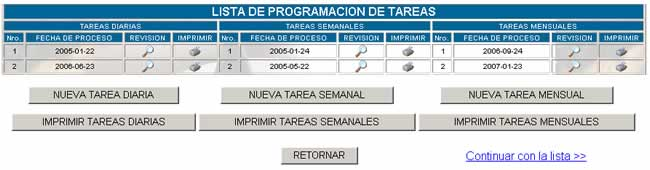
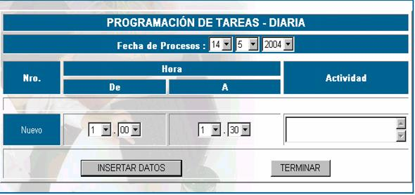
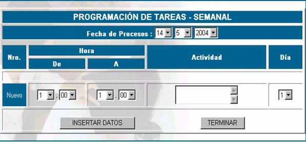
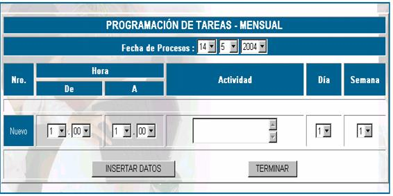
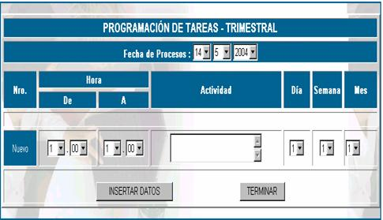
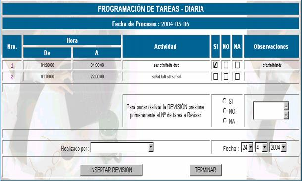

CALENDARIZACIÓN
Para poder realizar un control de medios
óptimos entonces es aconsejable que usted tenga un calendario con tareas
planificadas tanto diaria, semanal, mensual, trimestral, semestral y anualmente
La pantalla principal de esta opción se
presenta a continuación:

Donde:
Nro; especifica el número de tarea.
Fecha de proceso; especifica la fecha de registro de la tarea.
Nueva tarea diaria; eligiendo esta opción se presenta la siguiente
pantalla:

Fecha de Proceso; una vez que usted llene la fecha de proceso ésta no
será opcional de cambio inmediato.
Nro; especifica el número de tarea que se tiene diariamente y es asignado
por el sistema automáticamente
Hora de–a: elija la hora planificada para realizar la actividad
determinada, no cometa errores al introducir las horas, porque no se pueden
asignar 2 actividades en una misma hora.
Nueva tarea semanal; eligiendo esta opción se presenta la siguiente
pantalla:

Fecha de Proceso; una vez que usted llene la fecha de proceso ésta no
será opcional de cambio inmediato.
Nro; especifica el número de tarea que se tiene semanalmente y es asignado
por el sistema automáticamente
Hora de–a: elija la hora planificada para realizar la actividad
determinada, no cometa errores al introducir las horas, porque no se pueden
asignar 2 actividades en una misma hora y en un mismo día.
Nueva tarea mensual; eligiendo esta opción se presenta la siguiente
pantalla:

Fecha de Proceso; una vez que usted llene la fecha de proceso esta no
será opcional de cambio inmediato.
Nro; especifica el número de tarea que se tiene mensualmente y es asignado
por el sistema automáticamente
Hora de –a: elija la hora planificada para realizar la actividad
determinada, no cometa errores al introducir las horas, porque no se pueden
asignar 2 actividades en una misma hora, en un mismo día y en una misma semana.
Nueva tarea trimestral; eligiendo esta opción se presenta la siguiente
pantalla:

Fecha de Proceso; una vez que usted llene la fecha de proceso esta no
será opcional de cambio inmediato.
Nro; especifica el número de tarea que se tiene trimestralmente y es
asignado por el sistema automáticamente
Hora de –a: elija la hora planificada para realizar la actividad
determinada, no cometa al introducir las horas, porque no se pueden asignar 2
actividades en una misma hora, en un mismo día y en un mismo mes.
De igual forma se llenan las tareas
trimestrales, semestrales y anuales.
Revisar; para determinar cuáles de las tareas planificadas
han sido realizadas y cuáles no, es que se revisan las acitvidades,
el proceso es similar para todos los períodos. A continuación describiremos
el proceso de revisión diario.
Para tener acceso a esta opción haga click
en y aparecerá la siguiente
pantalla.

Nro; especifica el número de tarea, haga click en este vínculo para poder
realizar la revisión
Hora de–a; especifica el intervalo de hora en la cual se debería
realizar la actividad
Actividad; especifica el nombre de la actividad que se debía
realizar
Si No Na ; Seleccióne una de estas opciones: Si, se se realizó
la actividad; No, si no la realizó; y Na, si esta opción no se aplica
a la actividad.
Observaciones; realice las observaciones correspondientes de su
actividad
Realizado por; especifique su nombre
Fecha; registre la fecha de revisión